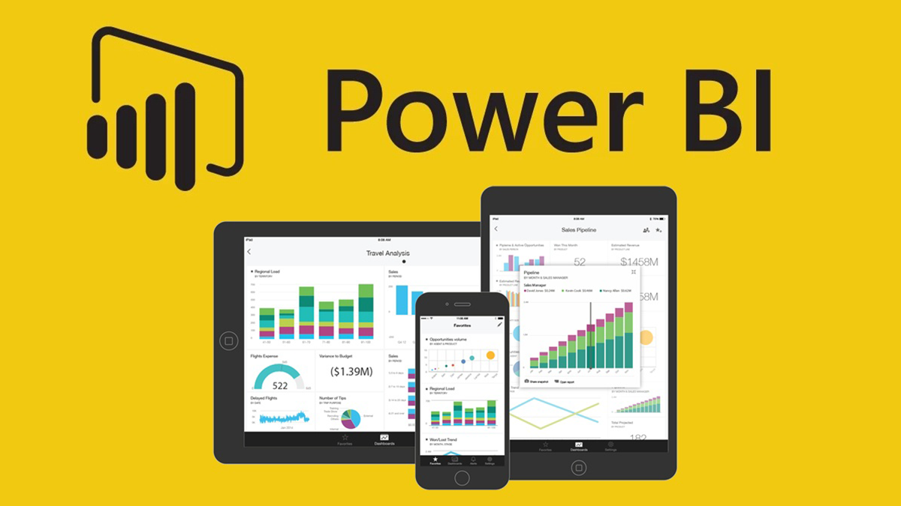
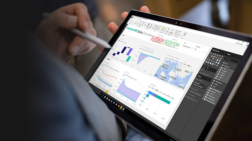

Developing data analysis projects in Python is a pivotal aspect of advancing one's career. It serves as a paramount method to not only assimilate new data analytics tools but also to hone and apply acquired skills, thereby showcasing one's proficiency in the field.
Exploring data through the process of Exploratory Data Analysis (EDA) holds paramount importance when delving into the intricacies of the Football Premier League. EDA encompasses tasks such as cleansing and structuring data, unveiling patterns and correlations through visualization, conducting statistical analyses, crafting novel features, and constructing predictive models. The primary objective of EDA is to attain a profound comprehension of the data, fostering the development of strategic approaches for the Football Premier League. Utilizing visualizations and statistical analyses as potent tools within EDA aids in extracting meaningful insights from the data, contributing to well-informed decision-making.
Use the link to view them
Analyzing and comprehending the dataset related to the Amazon rainforest is significantly enhanced through the pivotal process of Exploratory Data Analysis (EDA). EDA encompasses tasks such as data cleansing and formatting, unveiling patterns and relationships through visualization, conducting statistical analyses, introducing novel features, and constructing predictive models. The primary aim of EDA is to acquire a profound understanding of the data, facilitating the formulation of effective strategies for the preservation and protection of the Amazon rainforest. Visualizations and statistical analyses emerge as potent tools within EDA, enabling the extraction of valuable insights from the data to guide decision-making. Access the provided link for further details.
Utilizing SQL for data refinement and exploration generally entails employing SQL commands to filter, organize, and manipulate data within a relational database. This procedure encompasses actions like eliminating duplicate rows, rectifying data inaccuracies, and populating missing values. The exploration phase employs SQL queries to extract meaningful insights from the data, uncovering patterns, trends, and relationships across various columns and tables. Fundamental SQL commands employed for data purification and exploration encompass SELECT, WHERE, GROUP BY, JOIN, and more. In a dedicated segment of my portfolio website, I conducted analyses on Data Scientist's Employee Salaries dataset utilizing MY SQL Server.
For this endeavor, I conducted an Exploratory Data Analysis (EDA) on COVID-19. The exploration of COVID-19 data with Microsoft SQL Server entailed the application of SQL commands to filter, arrange, and manipulate information within a relational database. This encompassed activities like amalgamating diverse data sources, refining data according to specific criteria, and computing assorted statistics. Post the data exploration phase, I derived valuable insights into the proliferation of COVID-19, tracking the evolution of the pandemic over time through the utilization of Microsoft SQL Server.

Power BI stands out as a robust business intelligence tool, specializing in data visualization and exploration. It empowers users with interactive dashboards, reports, and charts, providing a dynamic means to analyze and present data effectively. The tool seamlessly connects to various data sources, ranging from Excel spreadsheets to on-premises databases and cloud-based platforms. It boasts an array of pre-built visualizations, encompassing bar charts, line charts, pie charts, and maps. Beyond this, Power BI allows users to tailor visualizations to their specific needs and even create entirely bespoke visuals.
Moreover, Power BI extends its utility with collaboration and sharing functionalities, facilitating the dissemination of crucial data insights throughout an organization. This particular project is dedicated to unveiling disparities, identifying trends, and notably shedding light on potential areas for improvement, focusing specifically on women in leadership roles and within the broader labor force.

Leveraging a Power BI dashboard for the analysis of car information empowers the automobile industry to base decisions on data-driven insights across diverse business facets. These visual representations seamlessly link to pertinent data sources, ensuring precision and currency in the insights provided. Moreover, the dashboard facilitates straightforward sharing with internal stakeholders, serving as a potent instrument for collaborative, data-centric decision-making. In addition, DAX calculations were implemented to discern accurate business patterns and trends.

Microsoft Excel plays a pivotal role in data analysis by offering a diverse range of functions and features to proficiently handle, organize, and analyze large datasets. Its versatility shines through in chart and graph creation, statistical measure calculations, and data manipulation via pivot tables, making it an indispensable tool for strategic decision-making. Within this project, I've crafted an Excel dashboard that leverages charts and pivot tables for comprehensive analysis. Access the Excel dashboard through the link provided below.
{kind=link}
{kind=link}